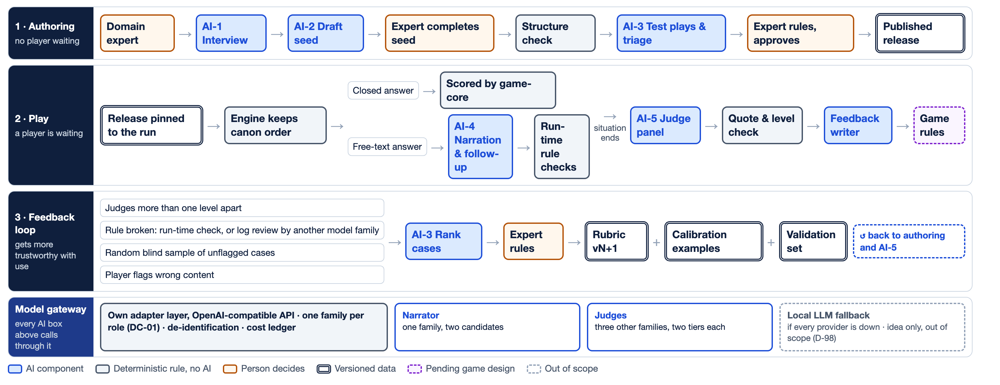

Nhóm sắp viết mục 5.3.6 theo mẫu báo cáo. Hình dưới là toàn bộ flow AI (bổ sung từ phần đã trình cô ngày 10/10). Nhóm xin cô cho ý kiến 4 câu ở cột phải.

| Thành phần | ĐACN | ĐATN |
|---|---|---|
| Sinh scenario (AI-4) · chấm, phản hồi (AI-5) | Phép thử khả thi | Đo RP-1, RP-2 |
| Dựng seed (AI-1, AI-2) · chạy thử, xếp ca (AI-3) | Bản thử | Dùng với panel chuyên gia đầu |
| AI phụ (câu hỏi 3) | Chờ ý kiến cô | |
| LLM local dự phòng | Ý tưởng theo gợi ý của cô | |
~30 bản ghi từ hai kịch bản Backend, nhóm đóng vai chuyên gia, cô kiểm một phần; 3 họ mô hình chấm × 2 bậc × 3 lần lặp; đo QWK, độ ổn định, độ trễ, chi phí. Chứng minh bộ máy chạy đúng, chưa phải độ khớp với chuyên gia thật.